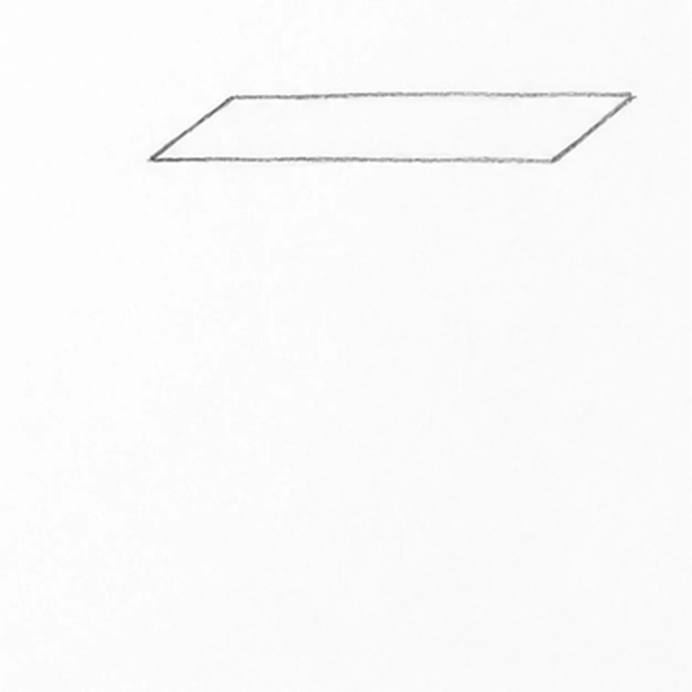
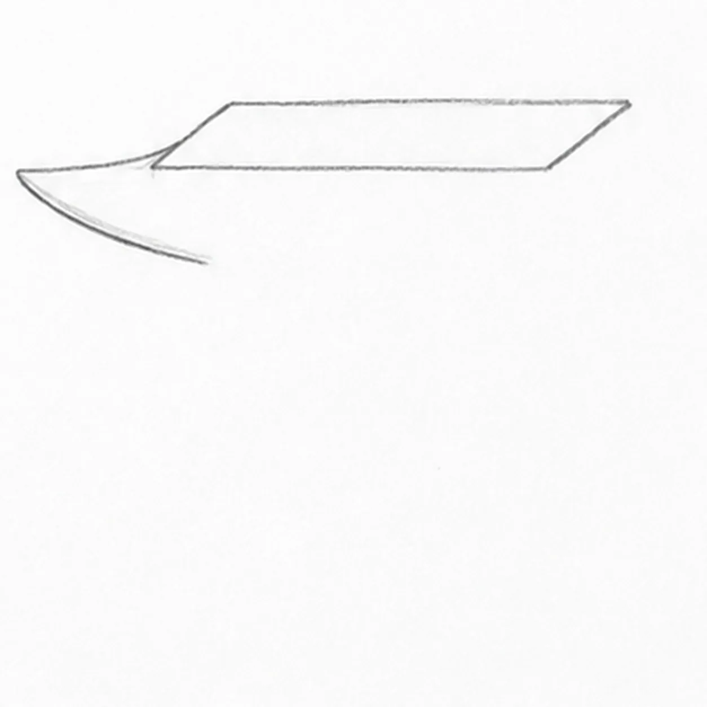
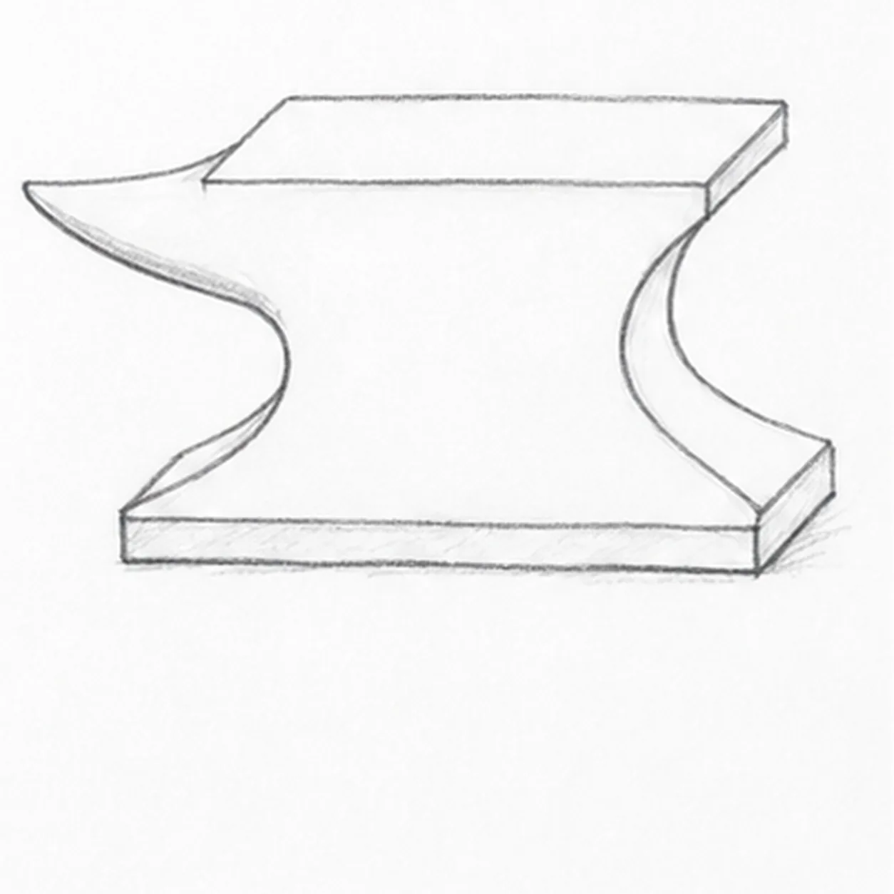
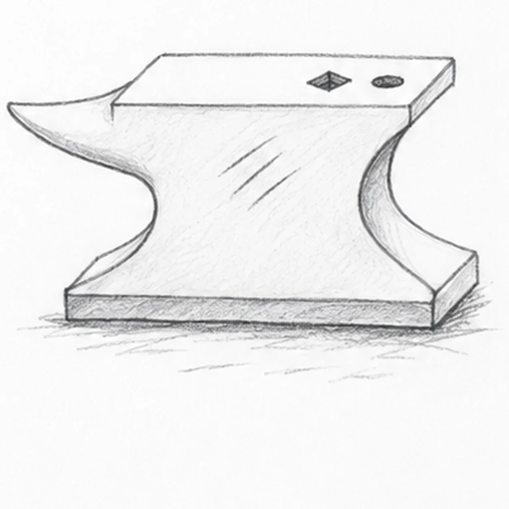

Pencil ready?
Let's draw an anvil
Treat this as one small practice round: build the subject lightly, notice the shapes, then darken only the lines that help the finished sketch.
-
01

Draw the flat striking face
Draw a wide, shallow parallelogram slightly above the middle of the page. Let its short ends slope up to the right. Keep the front and back long edges nearly parallel; this is the top of the anvil.
Sketch tip: Ghost the long edges before drawing. Compare the two short-edge angles to keep the top plane coherent.
-
02

Attach the pointed horn
From the back-left corner of the striking face, draw a long shallow curve to a point on the left. Curve back from this point toward the body, stopping below the front-left corner to leave an open connection for the waist. Keep the short left edge of the top as a visible join.
Sketch tip: The open end is intentional: the next waist curve continues from it, so no keeper line needs erasing.
-
03

Build the waist and heavy base
Continue the open horn curve down into a short concave left waist, then flare it toward the left foot. From the right top corner, draw a short heel drop, a concave right waist, and a flared right foot. Join the feet with a long line, then add a shallow slab underneath with two short downstrokes and a parallel bottom edge. Add the right return edges from heel to foot and across the base, plus a few light grounding strokes beneath the right foot.
Sketch tip: Compare the empty spaces under the horn and heel. Keep the base broad enough to make the iron feel heavy.
-
04

Add the tool holes and wear
Near the right end of the top, draw one small diamond-shaped square hole and one small oval hole beside it. Put three diagonal wear scratches on the front body. Lightly hatch the iron and extend the loose ground-shadow strokes beneath the base, keeping the top face pale.
Sketch tip: Turn the paper to pull each scratch in one relaxed stroke. The square hole follows the same perspective as the top.
-
05

Shade the iron planes
Use the side of a 2B pencil to deepen the waist and base, following their sloping planes. Darken the two holes and the ground shadow. Leave the striking face light, and glaze a little muted blue-gray over the iron without hiding the graphite grain or the three wear scratches.
Sketch tip: Squint at the drawing: the top should stay the lightest plane, with the base and ground shadow darkest.

![Handmade graphite and restrained colored-pencil sketch of one left-facing muted-ochre seahorse with one horse-like head and long snout, one three-point crown ridge, one visible eye, one arched neck and rounded belly, one tapering clockwise-curled tail wrapped exactly once around one teal-green eelgrass stem, one ribbed dorsal fin, exactly two small side fins, exactly seven curved torso plates, exactly five narrow eelgrass leaves, exactly two pale-blue bubbles, exactly two open-paper highlights, visible paper tooth, and one broken cool-gray ground shadow](assets/seahorse-curled-around-eelgrass-finished-v1.webp)